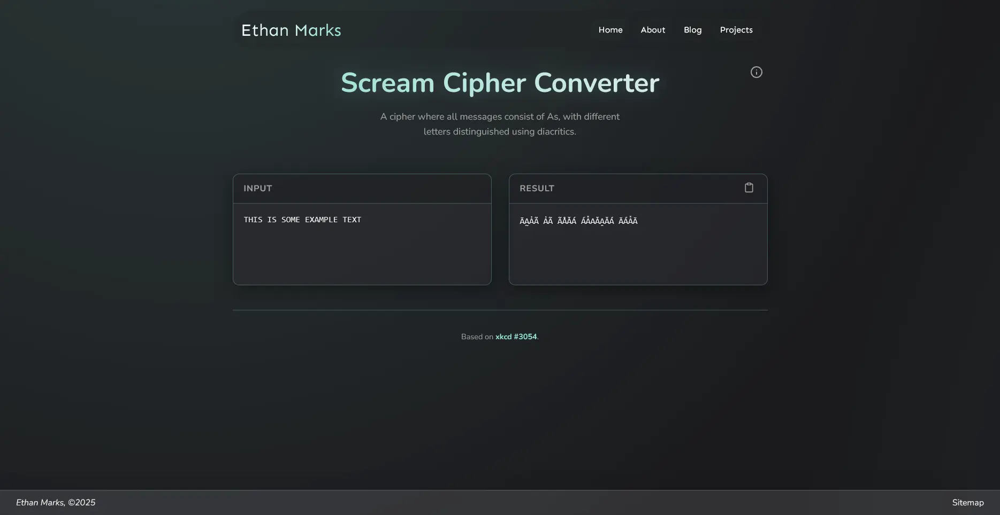

This is one of my favorite xkcd comics. It proposes the Scream Cipher, a creative, amusing, and not completely useless cipher.
The Scream Cipher works by assigning each letter of the alphabet to a unique diacritical variant of the letter A. For example, THIS IS SOME EXAMPLE TEXT becomes ĀA̰ẢÃ ẢÃ ÃÅǍÁ ÁA̽AǍA̯ĂÁ ĀÁA̽Ā.
The punchline in the comic is that attempting to pronounce the encrypted text would sound like screaming (AAAAAAAAAAA).
The Scream Cipher isn't great for actually making secret messages due to a lack of a key (although you could shift the diacritic dictionary with a 26-combination key to create a Caesar Cipher), but it is a pretty good obfuscation technique. If you hadn't heard of the Scream Cipher and you encountered Scream-encrypted text, you probably wouldn't even know that there was a secret message; you would just think it was something akin to Zalgo text.
This is called a Kerckhoffs-insecure cipher, and it's a demonstration of Security through Obscurity. The advantage is that, if you forget the key (which Scream Cipher doesn't have, but the principle still applies), you won't be locked out because the cipher is entropically weak enough to brute-force.
Converter
Anyways, I built a Scream Cipher converter webpage to automate the process of ciphering in Scream Cipher.
Usage
- Go to the Scream Cipher Converter webpage: https://colourlessspearmint.github.io/screamcipher.html
- Input Text: Type or paste the text you want to convert. It can be either plaintext or encrypted text; the program will detect it automatically. The conversion happens automatically.
- Copy to Clipboard: You can press the clipboard icon above the result area to copy the text to your clipboard.
Implementation Details
For the sake of simplicity and thoroughness, my converter has a few quirks.
- All lowercase letters are treated as though they were uppercase.
- Non-letters characters (like numbers and punctuation) are left unmodified.
- An error is thrown if non-ASCII unicode characters (like emoji) are detected.
Conclusion
ȀA̰ẢĂÁ ẢĀ ÅȦÀẢÅÄÃĂA̦ ẢÃÂ'Ā ÀÁȂA̦ A̯ȂAA̧ĀẢA̧AĂ, Ả A̮ẢÂA̱ ĀA̰Á ÃA̧ȂÁAǍ A̧ẢA̯A̰ÁȂ A̱ÁĂẢA̋A̰ĀA̮ÄĂ AÂA̱ ÁÂA̓ÅA̦ÁA̱ ǍAẠẢÂA̋ ĀA̰ẢÃ A̧ÅÂÀÁȂĀÁȂ. ĀA̰Á ÅÂĂA̦ ÄÃÁ A̧AÃÁ Ả A̧AÂ ĀA̰ẢÂẠ ÅA̮ ẢÃ ÃÁÂA̱ẢÂA̋ ĂÅȀ-ÃÁA̧ÄȂẢĀA̦ A̯ȂẢÀAĀÁ ǍÁÃÃAA̋ÁÃ ÅÀÁȂ A̧ÅǍǍÄÂẢA̧AĀẢÅÂ A̧A̰AÂÂÁĂÃ ȀA̰ÁȂÁ ÂÅȦÅA̱A̦ ÁĂÃÁ ȂÁAA̱Ã A̽ẠA̧A̱, ȦÄĀ ĀA̰AĀ'Ã A A̯ȂÁĀĀA̦ A̮ÄÂÂA̦ ÄÃÁ A̧AÃÁ.
~ÁĀA̰AÂ